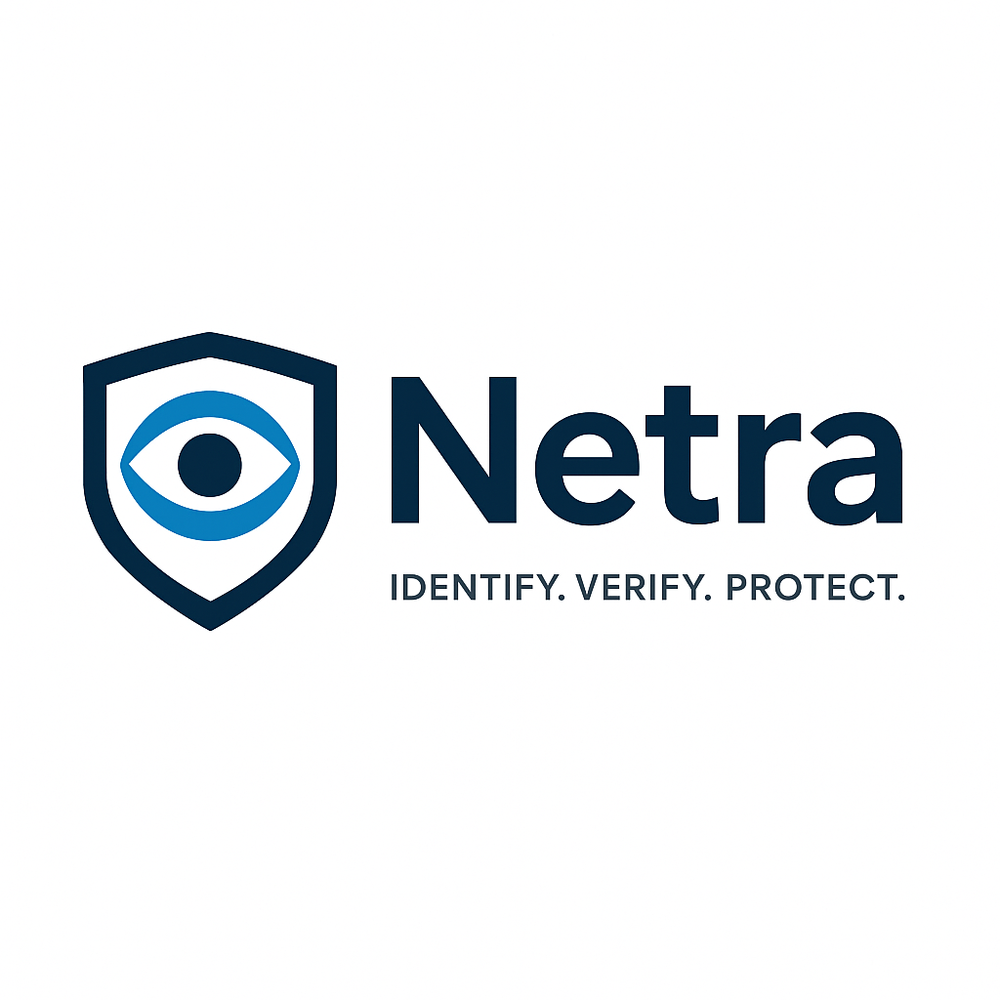

Netra – Identify. Verify. Protect.
Your secure, private shield for **face comparison and hyper-local incident alerting**.

Feature 1: Instant Threat Detection (Face Scan)
Netra lets you compare faces quickly and securely against multiple watchlists without ever sending your photos to the cloud.
How It Works:
- Scan Faces: Use your camera or select a photo to scan for faces.
- Private Vault: Save faces to a private, on-device list for comparison.
- Local Processing: All facial recognition and comparison happen **on your device** — nothing is uploaded.
- Fast & Private: Get instant results, with no personal data collected or shared.
Feature 2: Rapid Community Response (INCIDENT ALERT)
When seconds count during a theft or carjacking, **INCIDENT ALERT** instantly mobilizes the people around you.
Pinpoint Alerting with Location Data:
- One-Tap Broadcast: Press the **INCIDENT ALERT** button to instantly alert nearby users.
- Precise Location: The app captures your **latitude and longitude** to precisely pinpoint the incident on a map for recipients.
- Add Details: Quickly submit critical information (perpetrators, weapons, notes) to inform your community and ensure vigilance.
- Real-Time Map View: Recipients see the live location and the full details of the incident in the **TheftAlertMapDetailsView**.
Permissions Required:
- Camera Access: To scan faces from the live camera feed or add new faces to your Vault.
- Photo Library Access: To select an existing photo for scanning or for adding to your Vault.
- Location Services: **REQUIRED** to determine your **latitude and longitude** when sending an **INCIDENT ALERT**.
- Notifications: **REQUIRED** to receive real-time, high-priority alerts from other Netra users nearby.
Why Choose Netra?
- ✅ Fully private — all face processing happens **on your device**.
- ✅ **INCIDENT ALERT** uses your **real-time coordinates** for precise, life-saving community alerting.
- ✅ Mobilize your community quickly with a **one-tap emergency broadcast**.
- ✅ Manage your own list of faces in the **Private Vault**.
- ✅ Fast, intuitive, and easy-to-use interface.
Support & Privacy
If you have any questions or need assistance, email us at Anil.kumar.ait09@gmail.com.
All photos and results are processed locally on your device. Netra **does not collect or upload** personal data.
Read our Privacy Policy for more information.